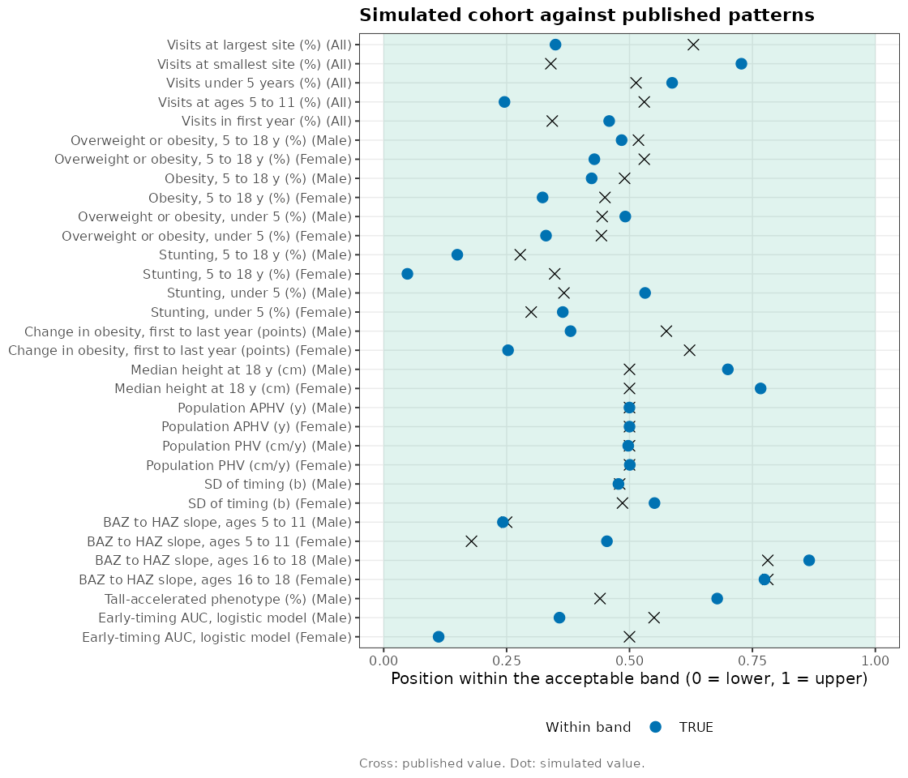

Every dataset in WeGrowHealthR comes from one generator,
wgh_simulate(). Real growth records of children cannot be
shared, so the package ships simulated cohorts instead. The
wgh_like preset is set so that a cohort
resembles the published results of the school health
cohort studied in the research program (see
wgh_references()): the same patterns, the same directions
of effect and numbers of a similar size. It does not reproduce published
values, and nothing computed from it is a finding.
This vignette explains how the generator works, how to check the resemblance, how to change the simulated world, and how to use the truth file to test methods.
Simulating a cohort
library(WeGrowHealthR)
sim <- wgh_simulate(20000, seed = 2026)
sim
#> <wgh_sim> preset "wgh_like", seed 2026
#> 42348 visits from 16118 children (19773 enrolled)
#> Mean-curve APHV: boys 12.2 y, girls 9.2 y. PHV: 9.3 and 7 cm/y
#> Simulated data. Results resemble but do not reproduce published findings.The main arguments are:
-
n_children, the number of children generated before enrolment rules (fewer appear in the visit data, because not every child attends), -
preset,"wgh_like"(default) or"reference"(a cohort with simple, textbook settings), or a settings list fromwgh_preset(), -
seed, so the same call always gives the same cohort, -
informative_visits, whether attendance depends on the child’s BMI as in real school data (FALSEmakes visits missing at random), -
style, the column names:"book1"(pid,yearvisit,baz) or"book2"(pid,schoolyear,bmiz), -
..., single settings that override the preset, for exampleyears = 2012:2025.
The result is a list:
names(sim)
#> [1] "visits" "roster" "truth_child" "truth_visit" "pop_peaks"
#> [6] "settings" "call"
head(sim$visits)
#> # A tibble: 6 × 13
#> pid sex site dob yearvisit examdate age height weight bmi
#> <chr> <fct> <fct> <date> <int> <date> <dbl> <dbl> <dbl> <dbl>
#> 1 C000002 Female Site1 2005-07-08 2019 2019-12-08 14.4 156. 46.2 19.0
#> 2 C000002 Female Site1 2005-07-08 2020 2020-12-30 15.5 158. 45.3 18.1
#> 3 C000002 Female Site1 2005-07-08 2022 2022-09-19 17.2 159. 49.8 19.8
#> 4 C000003 Male Site3 2010-07-12 2018 2018-11-11 8.33 124. 26.9 17.4
#> 5 C000003 Male Site3 2010-07-12 2019 2019-11-25 9.37 130 33.8 20
#> 6 C000003 Male Site3 2010-07-12 2020 2020-10-29 10.3 136. 37.1 20.2
#> # ℹ 3 more variables: haz <dbl>, waz <dbl>, baz <dbl>-
visitsholds the measurements, one row per visit, with WHO z-scores, -
rosterlists every child and school year, attended or not, -
truth_childandtruth_visithold the true values behind the measurements (next sections), -
pop_peaksthe population APHV and PHV implied by the settings, -
settingsthe full settings used.
How the children grow
Each child’s height follows a Preece-Baines mean curve for the
child’s sex, joined below 6 years to a WHO-shaped early childhood curve.
The child’s own curve is the mean curve shifted in size, timing and
intensity, as in a SITAR model. Children belong to growth phenotypes
(for example early and intense, or late and gentle) that shift these
parameters. Adiposity is a stable child trait with a slow drift. It
raises BMI, makes puberty slightly earlier and is linked with height.
BMI is converted to weight through the WHO reference. Measurement error
is added to height and weight. Attendance depends on age, calendar year
(with a year of school closures) and, when
informative_visits = TRUE, on BMI.
How close is the resemblance?
wgh_targets lists published patterns with acceptable
bands, for example the prevalence of overweight and obesity by sex, the
APHV of boys and girls and the spread of individual timing.
wgh_resemblance_report() computes each pattern in a
simulated cohort and checks it against its band.
head(wgh_targets)
#> # A tibble: 6 × 8
#> target sex published lower upper unit source tuned
#> <chr> <chr> <dbl> <dbl> <dbl> <chr> <chr> <lgl>
#> 1 Visits at largest site (%) All 67.6 55 75 % Ho et… TRUE
#> 2 Visits at smallest site (%) All 7.4 4 14 % Ho et… TRUE
#> 3 Visits under 5 years (%) All 22.7 15 30 % Ho et… TRUE
#> 4 Visits at ages 5 to 11 (%) All 48.6 38 58 % Ho et… TRUE
#> 5 Visits in first year (%) All 3.4 1 8 % Ho et… TRUE
#> 6 Overweight or obesity, 5 to 18… Male 47.7 42 53 % Ho et… TRUE
rr <- wgh_resemblance_report(sim)
rr
#> <wgh_resemblance>: 32 of 32 computable patterns within their bands
#> # A tibble: 32 × 7
#> target sex published lower upper simulated pass
#> <chr> <chr> <dbl> <dbl> <dbl> <dbl> <lgl>
#> 1 Visits at largest site (%) All 67.6 55 75 62.0 TRUE
#> 2 Visits at smallest site (%) All 7.4 4 14 11.3 TRUE
#> 3 Visits under 5 years (%) All 22.7 15 30 23.8 TRUE
#> 4 Visits at ages 5 to 11 (%) All 48.6 38 58 42.9 TRUE
#> 5 Visits in first year (%) All 3.4 1 8 4.21 TRUE
#> 6 Overweight or obesity, 5 to 18… Male 47.7 42 53 47.3 TRUE
#> 7 Overweight or obesity, 5 to 18… Fema… 26.3 21 31 25.3 TRUE
#> 8 Obesity, 5 to 18 y (%) Male 22.9 18 28 22.2 TRUE
#> 9 Obesity, 5 to 18 y (%) Fema… 6.7 4 10 5.94 TRUE
#> 10 Overweight or obesity, under 5… Male 9 5 14 9.42 TRUE
#> 11 Overweight or obesity, under 5… Fema… 5.1 2 9 4.31 TRUE
#> 12 Stunting, 5 to 18 y (%) Male 0.7 0.2 2 0.47 TRUE
#> 13 Stunting, 5 to 18 y (%) Fema… 1 0.2 2.5 0.31 TRUE
#> 14 Stunting, under 5 (%) Male 3.2 1 7 4.19 TRUE
#> 15 Stunting, under 5 (%) Fema… 2.8 1 7 3.19 TRUE
#> 16 Change in obesity, first to la… Male -4.4 -9 -1 -5.96 TRUE
#> 17 Change in obesity, first to la… Fema… -1.2 -4 0.5 -2.86 TRUE
#> 18 Median height at 18 y (cm) Male 172 170. 174. 173. TRUE
#> 19 Median height at 18 y (cm) Fema… 160 158. 162. 161. TRUE
#> 20 Population APHV (y) Male 12.2 11.7 12.7 12.2 TRUE
#> 21 Population APHV (y) Fema… 9.2 8.7 9.7 9.2 TRUE
#> 22 Population PHV (cm/y) Male 9.3 8.5 10.1 9.3 TRUE
#> 23 Population PHV (cm/y) Fema… 7 6.3 7.7 7 TRUE
#> 24 SD of timing (b) Male 0.52 0.4 0.65 0.52 TRUE
#> 25 SD of timing (b) Fema… 1.02 0.85 1.2 1.04 TRUE
#> 26 BAZ to HAZ slope, ages 5 to 11 Male 0.09 0.02 0.3 0.09 TRUE
#> 27 BAZ to HAZ slope, ages 5 to 11 Fema… 0.07 0.02 0.3 0.15 TRUE
#> 28 BAZ to HAZ slope, ages 16 to 18 Male -0.05 -0.3 0.02 -0.02 TRUE
#> 29 BAZ to HAZ slope, ages 16 to 18 Fema… -0.05 -0.3 0.02 -0.05 TRUE
#> 30 Tall-accelerated phenotype (%) Male 4.2 2 7 5.39 TRUE
#> 31 Early-timing AUC, logistic mod… Male 0.76 0.65 0.85 0.72 TRUE
#> 32 Early-timing AUC, logistic mod… Fema… 0.7 0.6 0.8 0.62 TRUE
plot(rr, base_size = 9)
Each row of the plot is one pattern. The green area is the acceptable
band, the cross the published value and the dot the simulated value
(blue inside the band, orange outside).
plot(rr, only_failed = TRUE) shows only the patterns
outside their band.
Some patterns were used to set the preset
(tuned = TRUE). Others were kept out as independent checks,
for example the association between BMI and height in childhood and in
late adolescence. Passing those checks shows the generator has the right
structure, not only the right averages.
Building another world
Because the true structure is known, you can change one setting and
see how an analysis responds. wgh_preset() returns all
settings, with units documented in the package source.
s <- wgh_preset("wgh_like")
s$beta_tempo_adiposity
#> Male Female
#> -0.15 -0.12
s$beta_tempo_adiposity <- c(Male = 0, Female = 0) # adiposity no longer changes timing
alt <- wgh_simulate(5000, preset = s, seed = 1)
cor(alt$truth_child$u_adip, alt$truth_child$b_tempo)
#> [1] -0.08284039
cor(sim$truth_child$u_adip, sim$truth_child$b_tempo)
#> [1] -0.2441347In the altered world, adiposity and timing are unrelated, while in
the default world children with more adiposity have earlier timing
(negative b). Running the pubertal spurt analysis on both
worlds shows whether a method can tell them apart.
wgh_tune_preset() adjusts a few settings automatically
so that a preset meets the prevalence and age-distribution targets,
which is how the wgh_like preset was set.
The truth file: testing methods
truth_child holds each child’s true SITAR parameters,
phenotype and adiposity, and truth_visit the true height
and velocity at each visit.
head(sim$truth_child)
#> # A tibble: 6 × 14
#> pid sex site dob birth_year phenotype u_adip d_adip z_size
#> <chr> <fct> <fct> <date> <int> <chr> <dbl> <dbl> <dbl>
#> 1 C000001 Female Site1 2001-04-18 2001 Average -0.217 0.136 2.13
#> 2 C000002 Female Site1 2005-07-08 2005 Late-gent… -0.533 -0.269 -0.500
#> 3 C000003 Male Site3 2010-07-12 2010 Early-int… 0.00160 -0.0435 -1.10
#> 4 C000004 Male Site2 2001-11-28 2001 Early-int… 0.260 -0.179 0.0330
#> 5 C000005 Female Site1 2005-08-11 2005 Average -1.61 -0.454 0.405
#> 6 C000006 Male Site1 2011-04-13 2011 Average 0.209 -0.247 -0.0980
#> # ℹ 5 more variables: a_size <dbl>, b_tempo <dbl>, c_intensity <dbl>,
#> # aphv_true <dbl>, phv_true <dbl>wgh_truth_check() compares estimates with the truth, for
example the individual APHV from a SITAR model with
aphv_true:
boys <- sim$visits[sim$visits$sex == "Male", ]
fit <- wgh_fit_sitar(boys, df = 5, age_range = c(6, 18))
eff <- wgh_sitar_effects(fit)
eff$pid <- eff$id
wgh_truth_check(eff, sim$truth_child, est_col = "aphv", truth_col = "aphv_true")This is the safest way to learn what a method can and cannot recover.
Bundled datasets
| Dataset | What it is |
|---|---|
growdat |
A cohort of about 3,300 children from 18 months to 18 years, book 1 column names |
growdat_raw |
growdat as a messy export, for practising cleaning |
growdat2_mini |
A smaller cohort with book 2 column names, with its truth file
growdat2_mini_truth
|
clinical_cases |
A few dozen children with clinical patterns
(wgh_simulate_clinical_cases()) |
wgh_targets |
The published patterns used to check resemblance |
who_lms, cdc_lms
|
WHO and CDC 2000 LMS reference tables |
The full-size cohort used in book 2 can be obtained with
wgh_download(). It downloads a frozen copy when a URL is
configured, verifying its checksum, and otherwise regenerates the same
cohort locally. The result records where it came from in its
"provenance" attribute.
small <- wgh_download(url = NULL, n_children = 500)
attr(small, "provenance")[c("source", "n_children", "seed", "preset", "package_version")]
#> $source
#> [1] "regenerated"
#>
#> $n_children
#> [1] 500
#>
#> $seed
#> [1] 2026
#>
#> $preset
#> [1] "wgh_like"
#>
#> $package_version
#> [1] "1.0.1"